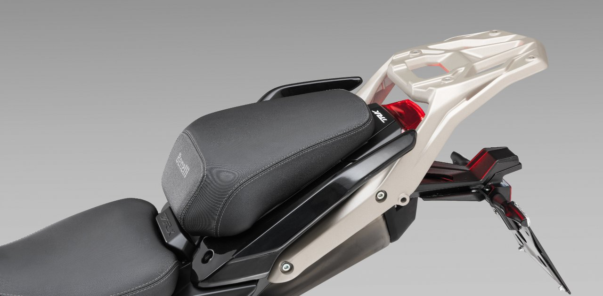
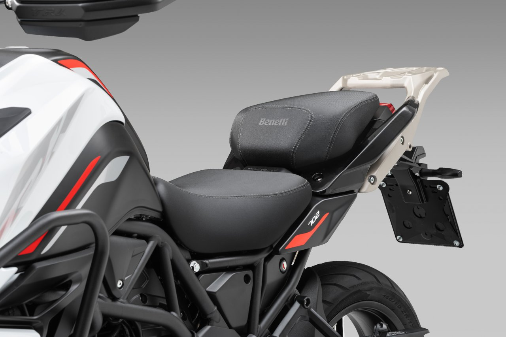
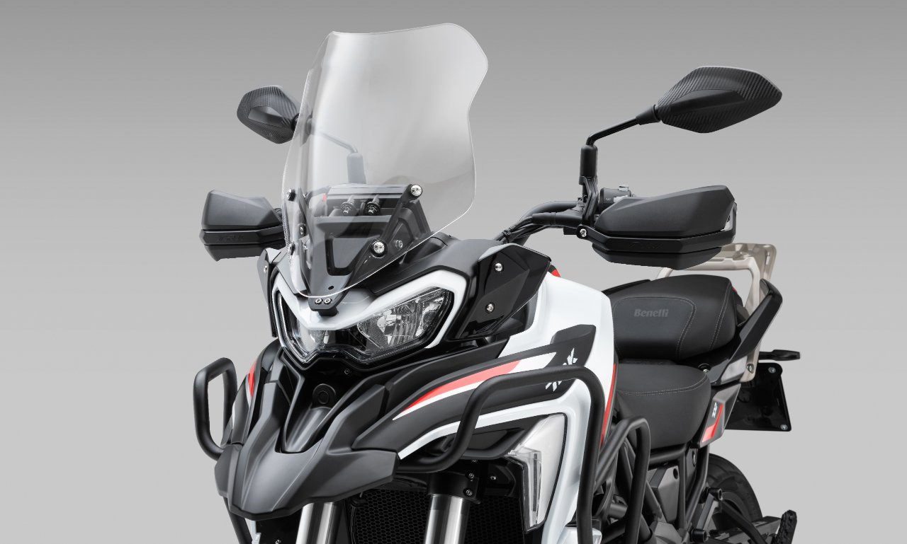
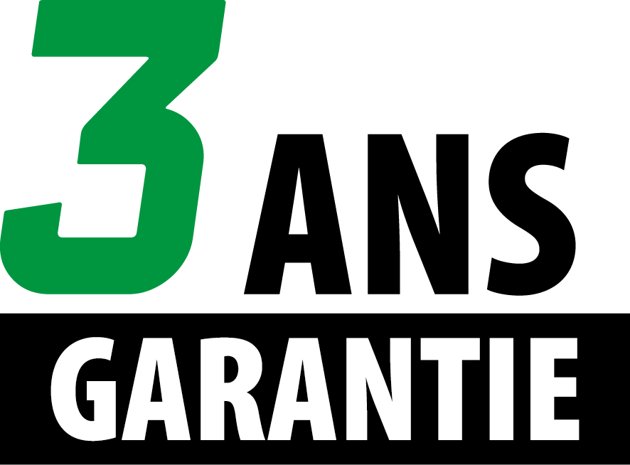
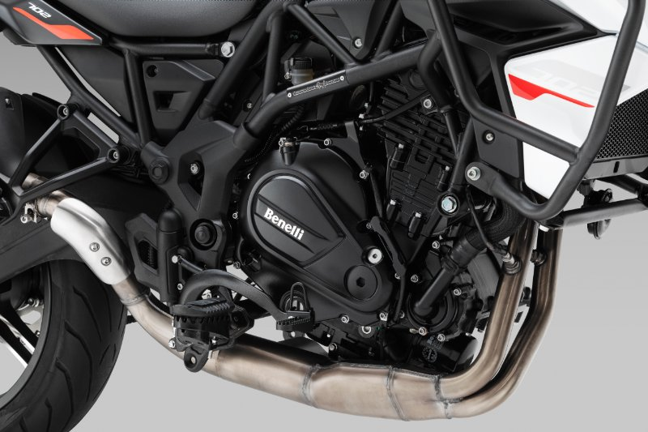

Ce 19 février, avec mes 2200 km au compteur sur la TRK 702, j'avais envie de partager mes impressions à froid sur cette machine. À 2°C de bon matin dans les gorges, c'était l'occasion parfaite de tester son comportement sur les petites routes sinueuses de ma région.
🛣️ La route en bref

Petite boucle matinale dans les gorges locales, sur des routes sinueuses et parfois encaissées. Rien d'extrême, mais suffisant pour sentir le comportement de la moto sur du roulant. Temperature fraîche oblige, c'était aussi l'occasion de tester le confort par temps froid. Le type de sortie parfaite pour une évaluation terrain après quelques milliers de kilomètres.
🫀 Ce qui m'a marqué

L'agilité sur les petites routes

Ce qui m'a frappé, c'est à quel point cette moto reste maniable sur les chemins qui ne sont pas sa destination première. Dans les gorges, sur du roulant, elle se faufile avec une aisance qui m'a surpris. Pour une machine orientée voyage, elle garde une vraie vivacité.
La position de conduite pour les grands

Même avec mes jambes légèrement pliées en position de conduite, je trouve finalement que ça ne pose pas de problème. L'ergonomie reste saine, et sur la durée, le confort est au rendez-vous.
Les valises : enfin une ouverture pratique

J'avais avant des valises qui s'ouvraient en façade - un calvaire pour charger le matériel de bivouac. Ces nouvelles valises avec leur grande ouverture sur le dessus, c'est le jour et la nuit. Quand tu dois ranger et sortir tout ton matos de camping, cette ergonomie fait toute la différence.
🏍️ Pourquoi tu dois y aller
Cette TRK 702, c'est l'équilibre parfait pour le motard qui veut du voyage sans se ruiner. À moins de 9000€ avec le pack valises, selle chauffante et carte grise, tu as une machine neuve avec 3 ans de garantie. C'est du sérieux.
Ce que j'apprécie le plus, c'est sa polyvalence. Elle n'est pas née pour les petits chemins, mais elle s'y débrouille très bien. Et sur route, le confort est là. Les poignées chauffantes qui arrivent bientôt seront le petit plus pour les sorties fraîches comme celle-ci.
L'éclairage additionnel que j'ai installé transforme complètement la visibilité. C'est un investissement qui vaut le coup si tu prévois de rouler tôt le matin ou tard le soir.
✨ Le mot de la fin
Après ces 2200 km, je reste convaincu par cette machine. Elle fait ce qu'on lui demande sans chichi, avec un sérieux qui rassure. C'est exactement ce qu'il faut pour découvrir de nouveaux horizons sans se prendre la tête.
Si tu cherches une moto de voyage abordable et fiable, fonce. Et un grand merci à Morgan de chez DAFI Moto qui m'accompagne dans mes projets - c'est ce genre de partenariat qui fait plaisir, basé sur la confiance et la passion partagée.